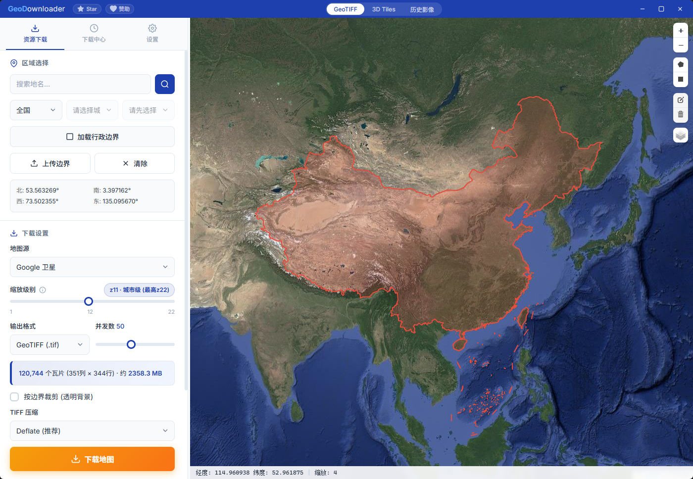
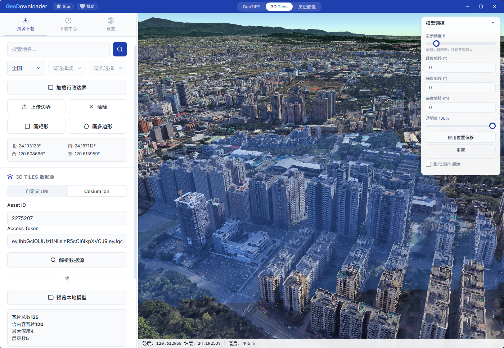
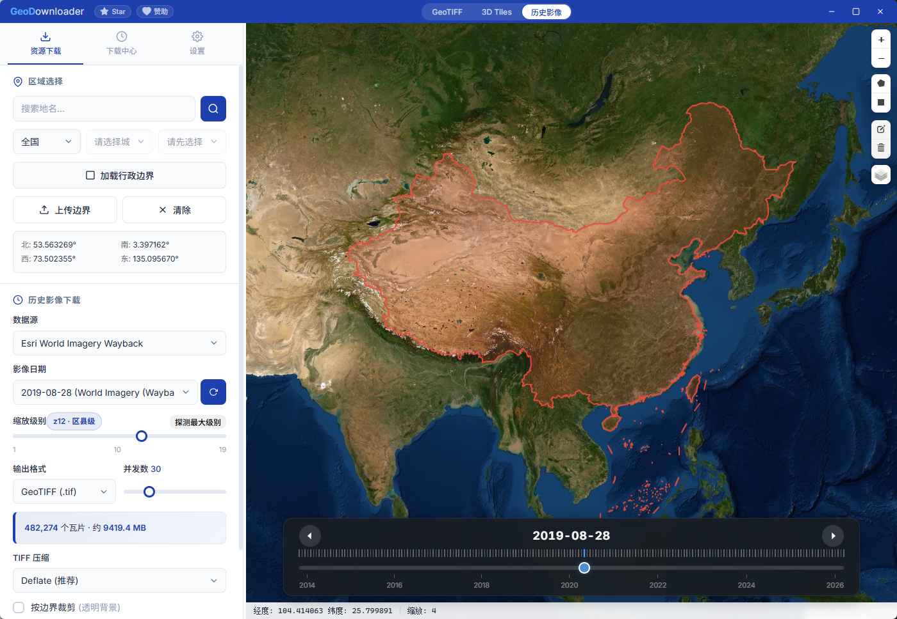

覆盖 GIS 数据获取的全场景需求
OSM、ArcGIS、天地图、Google Maps、高德地图等，支持自定义 XYZ 瓦片图源
Cesium Ion / Google 3D Tiles / 自定义 URL，空间裁剪，递归下载全 LOD，离线预览
Esri World Imagery Wayback，时间轴选择任意历史时期影像，支持批量下载
自动写入坐标投影标签，可选 LZW / Deflate 压缩，大范围自动 BigTIFF 流式写入
省/市/区县三级联动，上传 GeoJSON / Shapefile，手绘矩形/多边形，按边界精准裁剪
Rust 真异步并发，安装包仅 ~10 MB，内存占用 ~50 MB，多任务并行 + 断点续传
三大核心模块，一个桌面工具搞定

多图源 + 区域选择 + 压缩导出

Cesium Ion / Google 3D Tiles 裁剪下载

时间轴回溯 · 任意日期卫星影像
从 Python + PyWebView 重构而来，性能质变
| Python 版 | Rust/Tauri 版 | |
|---|---|---|
| 安装包大小 | ~200 MB | ~10 MB |
| 运行内存 | ~300 MB | ~50 MB |
| 下载速度 | 受 GIL 限制 | tokio 真异步 |
| 大图导出 | 内存爆炸 | BigTIFF 流式写入 |
| 跨平台 | 打包困难 | Win / macOS / Linux |